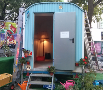

{% block content %}
{% filter markdown|typogrify -%}

Auch dieses Jahr waren wir als Verein wieder beim
freiGang dabei.
Der freiGang, als "Ort für Anderes", war auch diesmal wieder die gemütlichere
Ecke des Kultursommers.
Stattgefunden hat er diesmal vom 16. bis zum 20. Juli.
Dieses Mal hatten wir ein etwas kleineres Aufgebot mitgebracht, bestehend
aus einem 3D-Drucker des Typ JoSeb,
einigen Samples und blinkenden Bastelsensationen
aus unserem Hackspace-Alltag. Auch das Snake-Arduino-Terminal war wieder mit
dabei und fand gute Gesellschaft in der von uns betreuten Daddelecke des
Oldenburger Computermuseums.
Dadurch hatten wir als Teilnehmer auch die Möglichkeit, mehr von der
gemütlichen Atmosphäre der Veranstaltung mitzunehmen. Auch wenn einzelne
Mitglieder des Vereins den freiGang selbst tatkrätig durch Anpacken und
andere Tätigkeiten unterstützt haben.
Ganz nebenbei haben sich die
Oldenburger Freifunker erfolgreich um die
Internetversorgung des Lambertigangs gekümmert, sodass Notebooks nicht
völlig fehl am Platz waren.
Unterm Strich war es ein gelungenes und erfolgreiches Event für uns alle.
Wir haben uns mit vielen interessierten Gästen unterhalten, stolz die Ergebnisse
unserer vergangenen Workshops und Ferienpassaktionen gezeigt und erklärt und
die Aktionen der anderen Teilnehmer genossen.
Ob Seedbomben bauen mit Transition-Town, Siebdruck und Klamottentausch mit
der Schnittstelle und der Wagenburg, Power-Point-Karaoke, Live-Musik, DJ-Sets,
Poetry-Slam, Stummfilmvertonung, Kaffe-Klatsch oder einfach mal ein Bierchen
trinken und auf die selbstgebauten Pallettenmöbel gammeln -- da war echt für
jeden was dabei.
Zum Abschluss wurde dann noch mit allen Helfern am Sonntag gemütlich gegrillt.
Sicherlich wird der KtT nächstes Jahr auch wieder vertreten sein, und den
freiGang auch im Vorlauf tatkräftig unterstützen und mit den Gästen rumnerden.
Mehr Fotos werden gerade noch zusammengetragen.
{%- endfilter %}
{% endblock content %}